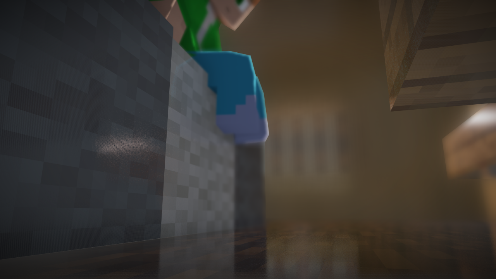
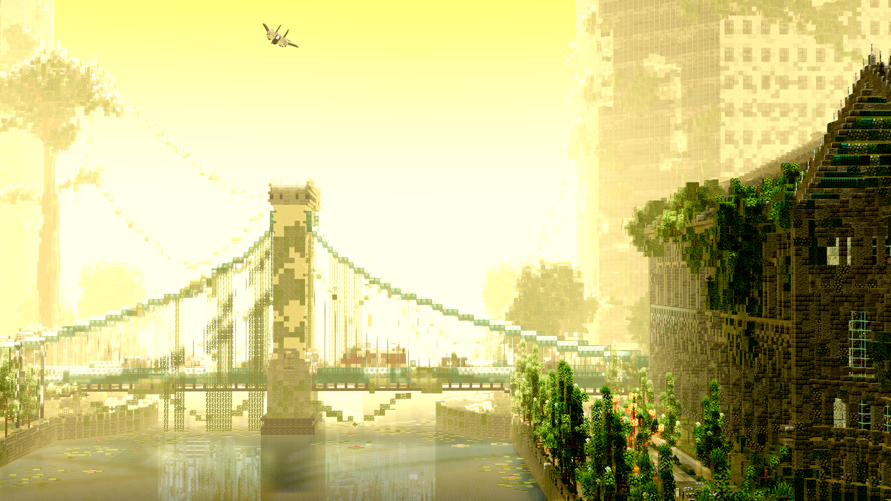
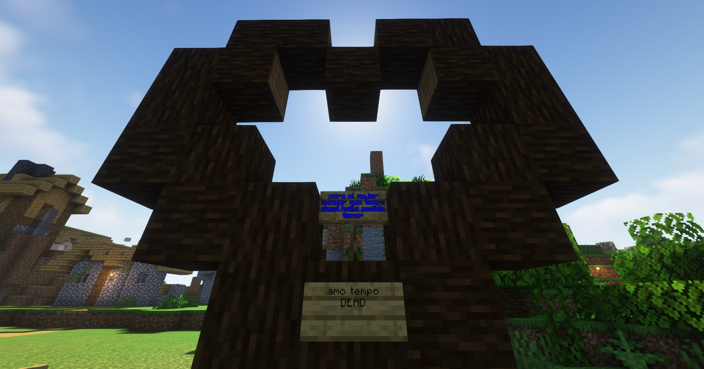

aqui podras encontrar el arte de la comunidad dentro de la aplicacion o por cuenta propia

Arte de: Spydcha_TA
Titulo: La casa
Clase: Render

Arte de: Spydcha_TA
Titulo: Desolacion
Clase: Render

Arte de: Spydcha_TA
Titulo: Corazón
Descripcion: Foto tomada en el servidor tempoDEATH
Clase: Foto